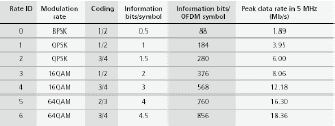
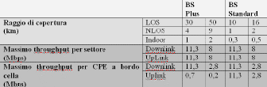

WiMAX: una svolta per la diffusione
della larga banda?
(pag 2 di 3)
Le principali caratteristiche tecniche
Di seguito si riportano alcune peculiarità tecniche che
rendono il WiMax una tecnologia wireless all’avanguardia per efficienza e
flessibilità.
Elevati bit rate anche in condizioni di Non-Line-Of-Sight
(NLOS)
La prima versione dell’802.16 era indirizzata all’uso
del range di frequenze 10-66 GHz. Successivamente con l’estensione 802.16a
la banda di interesse è stata portata anche al range 2-11 GHz. La
differenza sostanziale è legata alla necessità di condizioni di
Line-Of-Sight (LOS) per le frequenze più alte, rispetto all’NLOS, che è
possibile alle frequenze più basse.
Operare in condizioni di NLOS comporta molteplici
vantaggi:
Le complicazioni dell’NLOS sono legate al fatto che il
segnale in ricezione risulta formato da molteplici componenti, generate da
riflessioni, scattering e diffrazioni, ognuna con un ritardo,
un’attenuazione e una polarizzazione in generale differente rispetto a
quelle del segnale trasmesso.
Il recupero del segnale originario, anche nelle
difficili condizioni di NLOS, è affidato ad uno schema di trasmissione a
256 portanti di tipo OFDM (Ortogonal Frequency Division Multiplexing). La
suddivisione del canale in molteplici sottocanali a banda stretta e
ortogonali tra loro, tipica dell’OFDM, consente di confinare i danni
provocati dal fading selettivo ad un numero ridotto di sottocanali e di
poter impiegare un’equalizzazione più semplice rispetto a quella di tipo
adattativa richiesta da un unico canale.
Per far fronte alle diverse condizioni di rapporto
segnale rumore del link radio, l’802.16 utilizza un sistema di modulazione
adattativa, che dinamicamente seleziona tra sette tipi di modulazione
quello più idoneo alle condizioni di fading del canale radio.
I frame affetti da errore sono recuperati tramite
tecniche di correzione d’errore, del tipo Reed-Solomon FEC, agevolate
dall’uso di codifiche di convoluzione e algoritmi di interleaving.
I frame che non possono essere corretti sono
ritrasmessi con il meccanismo dell’Automatic Repeat Request (ARQ).
La combinazione di queste tecniche consente di
raggiungere livelli di BER pari a 10-9.
Nella tabella seguente sono riassunti i diversi schemi
di modulazioni e codifiche di convoluzione e i relativi bit rate
ottenibili.

click per ingrandire
Sono previsti anche algoritmi di controllo della
potenza, per fare in modo che le CPE, su indicazione della BS, varino
dinamicamente la potenza di trasmissione in base alle condizioni di fading
del canale trasmissivo, riducendo in tal modo sia i consumi di potenza,
sia i livelli di interferenza prodotta.
Le misure descritte sinora, insite nello standard,
possono essere accompagnate da altri accorgimenti in grado di migliorare
ulteriormente le performance del sistema in termini di fade margin e che
lo standard si limita a prevedere come opzionali:
Esteso range di copertura
Una caratteristica interessante del WiMax, classificata
opzionale dallo standard, è la sub-canalizzazione. Normalmente le
restrizioni regolamentari e la necessità di avere CPE poco costose fanno
sì che il range di copertura dell’intero sistema sia limitato dalla CPE,
cioè in direzione up-link. La sub-canalizzazione prevede di concentrare la
potenza di trasmissione della CPE su un numero di portanti OFDM inferiore
a quello totale, in modo da estendere il raggio di copertura a discapito
del bit rate in uplink.
Per avere dei riferimenti circa l’estensione di
copertura che può raggiungere il WiMax, si possono mettere a confronto le
due seguenti situazioni:
- una BS standard, cioè che soddisfa solo i requisiti base dello
standard;
- una BS che utilizza anche le seguenti caratteristiche opzionali:
- maggiore potenza di trasmissione;
- diversità di polarizzazione TX-RX;
- sub-canalizzazione;
- ARQ.
Assumendo di disporre di 3,5 MHz di banda a 3,5 GHz e
di utilizzare antenne direzionali di 60°, ciò che è stato ottenuto è
riportato in tabella:

click per ingrandire
Versatilità nell’uso della banda
Poiché ogni Paese presenta una propria regolamentazione
nell’uso delle frequenze, lo standard non prevede canali di ampiezza
prefissata, ma che ogni canale possa avere una banda variabile,
consentendo così di utilizzare al meglio le risorse radio.
I vincoli da rispettare sono i seguenti:
-
l’ampiezza di un canale deve essere un multiplo
intero di 1,25 MHz, 1,5 MHz e 1,75 MHz;
-
l’ampiezza massima di un canale è di 20 MHz.
Pertanto un operatore che ha a disposizione per esempio
14 MHz di banda, può scegliere di organizzarla in vari modi: con 1 canale
da 14 MHz, 2 canali da 7 MHz, 4 da 3,5 MHz oppure 8 da 1,75 MHz.
Inoltre sempre per potersi adattare alle diverse
possibilità di regolamentazione di uso delle frequenze, lo standard
supporta sia il Time Division Duplex (TDD), che consente di trasmettere e
ricevere sullo stesso canale, sia il Frequency Division Duplex (FDD), che
richiede due canali separati da 50-100 MHz per la trasmissione e la
ricezione.
Sicurezza delle connessioni
Il problema della sicurezza delle comunicazioni,
fortemente trascurato dal WiFi, viene risolto dal WiMax attraverso misure
di:
-
autenticazione dei terminali;
-
autenticazione dell’utente tramite EAP (Exstensible
Authentication Protocol);
-
crittografia dei dati tramite DES (Data
Encryption Standard) o AES (Advanced Encryption Standard).
Indipendenza dal tipo di tecnologia di trasporto e
garanzia di Qualità of Service (QoS)
Il MAC Layer prevede la presenza di speciali sublayer
di convergenza, che hanno il compito di ricondurre ad un unico formato,
quello dei Service Data Unit (SDU), le connessioni dei livelli di
trasporto superiori, sia ATM, sia a pacchetto (IPv4, IPv6 o Ethernet),
preservando o attivando garanzie di QoS e di allocazione di banda.
Lo standard consente di gestire diverse classi di
servizio:
- Unsolicited Grant Services (UGS), per servizi quali l’emulazione di
E1 e Voice over IP senza soppressione del silenzio;
- Real-Time Polling Services (rtPS), per servizi real-time che
generano pacchetti di dimensione variabile, ad esempio video MPEG o VoIP
con soppressione del silenzio;
- Non-Real-Time Polling Services (nrtPS), per servizi non real time
caratterizzati da burst di pacchetti di dimensione variabile
- Best Effort (BE) Services: quelli tipicamente forniti oggi da
Internet, per esempio per il web surfing.
|


{kind=link}
{kind=link}